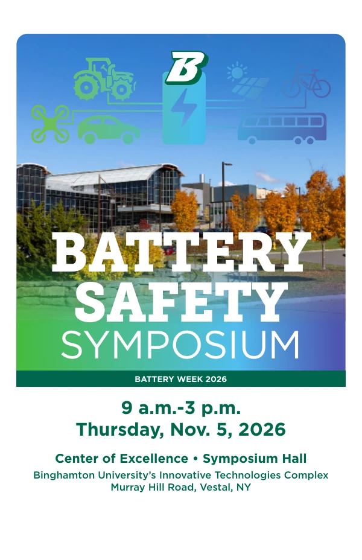

NYPA-supported program
Power-system workforce training
Coursework, simulation labs, industry seminars, and internships connect power engineering with professional practice.
Explore the NYPA program →Engagement
Workforce training, battery education, professional activities, and news from the group.
NYPA-supported program
Coursework, simulation labs, industry seminars, and internships connect power engineering with professional practice.
Explore the NYPA program →NSF Energy Storage Engine
Training and regional education pathways help build the energy-storage workforce in Upstate New York.
Explore Engine training →Professional mini-courses & labs
Introduction to Battery Systems, Battery Management System Design, and practical BMS laboratory activities.
Explore battery training →Power and Energy Storage Technical Fellow
Ziang “John” Zhang serves as a Power and Energy Storage Technical Fellow with the NSF Energy Storage Engine in Upstate New York. His fellowship connects academic expertise and industry partners around stationary energy storage and grid integration.
Meet the Engine Fellows ↗Battery Week 2026 · November 5
The third Battery Safety Symposium brought researchers, industry specialists, and policymakers to Binghamton University to discuss battery safety standards, technology, and field experience.
Ziang “John” Zhang served as symposium host and industry-panel moderator.
WIVT/WBGH report via AOL · Nov. 6 ↗WBNG Battery Week preview · Oct. 30 ↗
Explore the 2026 symposium →
Explore the 2026 symposium program, local reporting, and industry discussion.
2026 Battery Safety Symposium →Industry speakers from NYPA, NYISO, NYSEG, and AVANGRID share their work with students.
Browse the seminar series →Technology events, university lab tours, and demonstrations connect the group with the wider engineering community.
Explore the event archive →The November 5 Battery Safety Symposium at Binghamton University brought researchers and industry professionals together during Battery Week 2026. Ziang “John” Zhang served as symposium host and industry-panel moderator. Local coverage highlighted battery safety, education, and energy-storage applications.
WIVT/WBGH report via AOL · Nov. 6 ↗WBNG Battery Week preview · Oct. 30 ↗
Explore the 2026 symposium →A $5 million DOE-supported project will develop a storage demonstration for critical facilities at Binghamton.
University story ↗Binghamton reported a $1.2 million NSF award for research on power-grid stability with growing renewable generation.
University storyBinghamton announced selection for $2.6 million in DOE support, including a planned hybrid photovoltaic plant demonstration.
University story